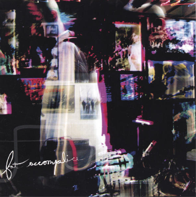

Your browser does not support HTML5
Home
About Me
Work
Contact

artvandalay
Fat Accomplice
Progressive Rock / Jamband
Dustin Milotte: Guitar and Vocals
1. That's a Good Question
2. That's a Good Question pt.2
3. Psilocybe
4. Delerium
5. Shortstack
6. Carefree Tastetest
7. Tablas and Toasters
8. Minus
9. Rinse, Repeat
10. Backpacking Through Copelandia
11. Point
12. Adviso
13. He Knows Time
14. The Penultimate Recital
15. A Brother's Gotta Work It Out